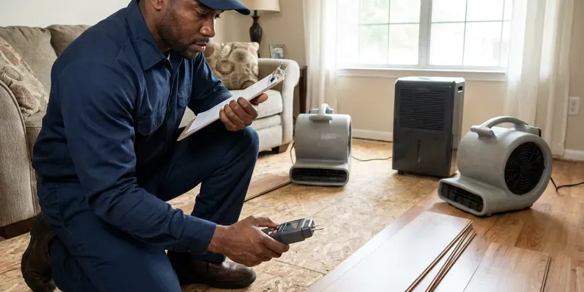

Rooter Services in Lebanon, NH
Drain stopped or sewer backing into the tub in Lebanon, NH? FVR Plumbing runs rooter machines that cut the clog out instead of just poking through it.
- Same-Day Drain Clearing
- Work Guaranteed
- Price Before We Start
- Cable Sized to Your Pipe

Roots in the Sewer? We Cut Them Out in Lebanon, NH.
A backed-up sewer stops the whole house cold. Call FVR Plumbing and we will send a rooter tech.
Lebanon, NH Rooter Service for Stubborn Clogs
FVR Plumbing roots lots of older homes in Lebanon, NH. Frost heave and shifting rocky soil can damage older sewer laterals and shallow water lines. Shifting ground opens joints, and roots and grit move in through the gaps. Our crews cut roots and grease flush with the pipe wall, which keeps the line open for months instead of days.
Some of what we do:
- Main line clearing for homes and commercial buildings
- Root cutting and regrowth treatment
- Sewer camera checks to see the problem

Additional Plumbing Maintenance Services in Lebanon, NH
Our maintenance and specialty plumbing services in Lebanon, NH catch small problems before they become emergencies.


Customers
Why Choose FVR Plumbing for Rooter Services in Lebanon, NH?
Every technician is trained on clay, cast iron, ABS and PVC drain lines. Each material takes a different cutter and a different touch on the foot pedal, and mixing them up is how pipes get cracked. A clay joint can shatter under the wrong blade.
- Longer Between Calls, Full-diameter cutting keeps a line clear far longer than punching a hole through the clog.
- Deep Line Clearing, Our cables reach clogs well over 100 feet from the cleanout, far past what a plunger or hand snake can touch.
- Local Experience, FVR Plumbing techs work on Lebanon sewers every day and know which older streets tend to have root-prone clay sewer lines.
Citywide Coverage
Our service area covers all of Lebanon and the towns around it. Frost heave and shifting rocky soil can crack older sewer laterals and shallow water lines. Lines buried in shifting ground tend to open at the joints, which lets roots and grit into the pipe over time. We see it often.
Experienced Team
Each technician learns to read cable feedback. If the cable jerks hard or will not advance, it may mean broken pipe, so they stop before it gets worse. That habit protects old clay.
Safety-First Approach
Because the machines are powerful, our crews use guards, gloves and foot pedal controls. We contain debris and sewage as we work. Before leaving, we clean up and take what came out of the line with us.
Trusted Certified Lebanon Plumbing Services Professionals
At FVR Plumbing, we take pride in licensed, certified plumbing services throughout Lebanon, NH. Credentials matter in this trade. Every repair, install and maintenance visit follows strict safety and quality rules, and the plumbers doing the work carry recognized industry credentials.
Call Us Now PHCC Plumbing Contractor Recognition
PHCC Plumbing Contractor Recognition Better Business Bureau (BBB) Accreditation
Better Business Bureau (BBB) Accreditation Angi Certified Pro
Angi Certified Pro ISO 9001 Quality Management Certification
ISO 9001 Quality Management CertificationSewer and Drain Rooting in Lebanon, NH
Emergency Rooter Service in Lebanon
Toilets bubbling, a tub filling with gray water, a basement drain backing up. Those are main line clogs, and they get worse every time someone flushes, showers or starts a load of laundry upstairs. FVR Plumbing handles emergency rooter calls in Lebanon at night and on weekends. Hold off on running water until the tech gets there.

Residential Rooter Services in Lebanon
Kitchen sinks plug with grease, and bathroom lines plug with hair and soap scum. The cable gets matched to the drain, a light 1/4 inch for a bathroom sink and a heavier 3/8 inch for a kitchen run. Small clogs rarely need more than a hand auger. If the same drain keeps stopping up in your Lebanon home, we explain the cause and what fitting or habit change keeps it open.
Emergency Rooter Services in Lebanon, NH
Sewage in a floor drain on a Saturday night does not wait for Monday. FVR Plumbing takes emergency rooter calls in Lebanon, NH and sends a truck loaded with cable, cutters and a jetter. We usually clear the line in one trip. If sewage got onto flooring, we help contain it and give you names of cleanup crews.
Scheduled Drain Maintenance in Lebanon, NH
Some lines need cutting on a calendar. Homes with large trees near the sewer often need rooting every 12 to 18 months. FVR Plumbing can put your Lebanon, NH property on a schedule and send a reminder when the next visit comes up. Cutting a line before it stops costs less than an after-hours backup and keeps sewage off your floor.
Hydro-Jetting Services in Lebanon, NH
Jetting puts water through a nozzle at 3,000 to 4,000 psi and scrubs the pipe wall clean. Grease, scale and fine roots that a cable rides over come off with the water. Testing well water around Lebanon is the right first step before choosing a treatment system or filter. We camera the line first. Cracked clay or thin cast iron can be hurt by that pressure, so we only jet a line we have seen and trust.
Sewer Root Removal in Lebanon
Roots cause more main sewer clogs than anything else on older streets. They enter through tiny gaps in clay and cast iron joints and grow into thick mats that catch everything flowing past. We cut them back with a root saw on a heavy cable. Plan on rooting every 12 to 24 months.
Commercial Rooter Service in Lebanon
Restaurants, apartment buildings, schools and offices load their drains all day. We root larger mains, kitchen waste lines and floor drains with commercial machines and heavier cable than any house call would need. A cleaning schedule means fewer emergencies. We can work after closing so tenants and customers are not bothered by the noise.

Rooting vs. Pipe Repair in Lebanon, NH
Rooting makes sense when the pipe is sound and just clogged. If roots come back within a few months, or the cable keeps catching on a broken hub, a repair starts to pay for itself. A camera answers the question. Rooting usually runs a few hundred dollars, and lining or replacing a section costs more up front and stops the repeat visits.
Rooter Service Near Me in Lebanon, NH
Neighbors in Lebanon call us for the same few reasons, roots in old clay, grease in kitchen lines and wipes in the main. These are clogs we clear every week. Every truck has cable long enough to reach the street from the cleanout on most lots, and a camera if the cause is unclear.
Close by matters most when sewage is coming up a floor drain. FVR Plumbing serves Lebanon, NH and the surrounding towns with rooter crews who are familiar with how the local sewers run. Response times stay short. Knowing roughly where the tap sits on local lots helps us run cable the full distance.
FVR Plumbing at a Glance
- Licensed and insured plumbers serving Lebanon, NH
- Same-day appointments and 24/7 emergency response
- Clear written estimates, no hidden fees
- 4.9-star rated by 840+ New Hampshire customers
Lebanon Map
Lebanon Information
- Population
- 15,342
- Area codes
- Local
- Service area
- Lebanon and towns within a 40 mile drive
- Nearby
- Claremont, Laconia, Concord, Keene
A mature shade tree can send hair-fine roots through a joint gap and fill a 4 inch sewer in a couple of seasons, which is why regular rooting keeps Lebanon drains moving.
Expert Services
Call FVR Plumbing for honest, reliable plumbing from people who know the trade in Lebanon, NH.
Our Specialized Plumbing Services in Lebanon, NH
At FVR Plumbing, you get every kind of plumbing service from one company across Lebanon, NH. We go from leak detection all the way to full system installations, for homes and commercial buildings, and we do it quickly at a fair price. Here are the core services we offer:


How a Rooter Call Works in Lebanon, NH
Our rooter process is fast, clean and focused on clearing the full pipe.
Schedule
Call (844) 442-1569 to book rooter service. Our dispatcher asks a few questions about the problem and sends a tech to your Lebanon property.
Assess
The tech checks which fixtures are affected and may run a camera to find the cause and the exact spot of the clog.
Clear It
Using drum or sectional augers, or a jetter, we clear the line to the pipe wall and restore normal flow.
Frequently Asked Questions About Rooter Services in Lebanon
Rooting a sink, tub or toilet typically runs $125 to $300. Main sewer rooting through a cleanout usually runs $200 to $500. With hydro jetting added, expect roughly $450 to $1,000, depending on how long the line is and how heavy the grease is. Nights and weekends run higher.
Yes. Evenings, weekends and holidays are covered for urgent backups. After-hours rates are explained before work begins.
Keep grease, coffee grounds and wipes out of drains. Put strainers in tub and shower drains to catch hair. Run hot water after using the disposal, and scrape plates into the trash before rinsing so less food goes down the kitchen line. Older lines with roots need scheduled rooting every 12 to 24 months.
Rooting uses a spinning cable with cutting blades to break up clogs and roots. Jetting works another way. Hydro jetting uses high-pressure water to scrub the pipe walls clean. Many tough lines do best with both, cut first to open the line and jetted second to wash out what the blades left.
Rooting is safe with a trained tech and the correct cable and blade. Collapsed or badly cracked pipe can be hurt by anything run through it. The tech's touch matters. We stop if the pipe shows damage, and we bring in the camera to look before going any further down the line.
It can be, so we prepare for it. Drop cloths go down from the door to the work area, and we keep buckets and rags at the cleanout. Cables come out wet. It gets wiped as it comes out, and debris goes into bags before we clean up and leave.
Drain snaking, also called augering, uses a flexible cable and cutting head to break up or pull out the clog. It works well on hair, wipes and roots. Hydro jetting washes the entire inside of the pipe with high-pressure water, removing grease, scale and sludge the cable leaves on the walls. Repeat clogs usually need jetting.
Gurgling toilets, sewage odors and slow drains in several fixtures are the typical signs. Water backing up into a tub when you flush is another clue. Take that one seriously. Frequent clogs in the same line also point to a deeper blockage, often roots at a joint 30 or 40 feet out from the house.
What People Are Saying About Our Plumbing Experts?

Jessica T.
We were adding a gas range in a kitchen remodel and needed a new line run from the meter. The plumber pulled the permit, ran the pipe through the crawl space, and had it inspected and approved within the week.
Gas Line Repair · Lebanon, NH
Rachel N.
Hard water was leaving white crust on every faucet and our dishwasher was struggling. The tech tested the water, recommended a softener sized for a family of five, and installed it with a bypass valve in one afternoon. The spots on our glasses are gone.
Water Softener · Concord, NHEmily R.
The shutoff valve under our kitchen sink snapped off in my hand on a Sunday morning. FVR Plumbing had someone out by early afternoon. He replaced both angle stops with quarter turn valves and showed me where our main shutoff was, which I honestly did not know.
Plumbing Repair · Laconia, NH
Brian W.
I smelled gas behind the dryer and called right away. The plumber found a corroded flex connector, replaced it, and pressure tested the whole line before turning the gas back on. He let me watch the gauge hold steady for fifteen minutes.
Gas Line Repair · Manchester, NH
Carlos V.
Our house still had galvanized pipe, and upstairs the shower was a trickle. The crew repiped everything in PEX over three days and patched every drywall hole before they left. The pressure difference is night and day.
Repiping · Keene, NHMark T.
The floor drain in our office break room backed up every few weeks. The plumber ran a cable, then put a camera down and found roots at a joint about thirty feet out. Seeing it on the screen made the decision easy.
Drain Cleaning · Keene, NH